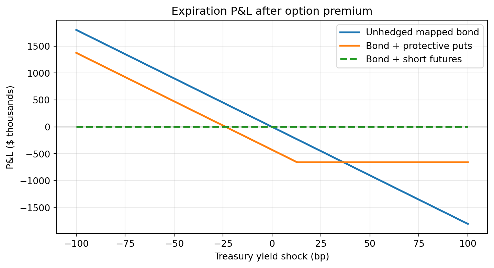

import math
import numpy as np
import pandas as pd
import matplotlib.pyplot as plt
portfolio_value = 25_000_000
portfolio_dv01 = 18_000
futures_price = 112.00
strike = 111.00
futures_dv01 = 78.00
dollars_per_point = 1_000
time_to_expiry = 0.50
risk_free_rate = 0.042
volatility = 0.075Practical Demo: Hedging with Options on Treasury Futures
Learning Objectives
After completing this demo you should be able to read a Treasury futures option quote, separate intrinsic value from time value, calculate a Black futures-option benchmark, size a protective-put overlay with DV01, compare its scenario P&L with a linear futures hedge, and explain basis, volatility, and time-decay risks.
1 Inputs and Assumptions
All inputs are illustrative, market-like inputs, not live quotes. The option is treated as European for Black-model transparency; actual contract exercise and margin conventions must be checked. The bond portfolio is mapped to one Treasury futures contract with DV01; the CTD, conversion factor, basis, convexity, transaction costs, margin cash flows, and early exercise are held fixed or ignored.
2 Treasury Option Quote Convention
Treasury futures and their options are quoted in price points and fractions. For a $100,000 face-value contract, one full point is $1,000 and 1/64 of a point is $15.625. A premium of 1-54 means
\[ 1+\frac{54}{64}=1.84375\text{ points}, \]
or $1,843.75 per contract. Price points, dollars, and yield basis points are different units.
quoted_points = 1 + 54 / 64
quoted_dollars = quoted_points * dollars_per_point
pd.Series({"Quoted premium (points)": quoted_points,
"Quoted premium ($/contract)": quoted_dollars})Quoted premium (points) 1.8438
Quoted premium ($/contract) 1843.7500
dtype: float643 Intrinsic Value, Time Value, and Black’s Model
For a futures put, intrinsic value is \(\max(K-F,0)\). Black’s European futures-put formula is
\[ p=e^{-rT}\left[K N(-d_2)-F N(-d_1)\right], \]
\[ d_1=\frac{\ln(F/K)+\tfrac12\sigma^2T}{\sigma\sqrt{T}}, \qquad d_2=d_1-\sigma\sqrt{T}. \]
def normal_cdf(x):
x = np.asarray(x, dtype=float)
return 0.5 * (1 + np.vectorize(math.erf)(x / np.sqrt(2)))
def black_futures_put(F, K, T, r, sigma):
vol_time = sigma * np.sqrt(T)
d1 = (np.log(F / K) + 0.5 * sigma**2 * T) / vol_time
d2 = d1 - vol_time
return np.exp(-r * T) * (K * normal_cdf(-d2) - F * normal_cdf(-d1))
model_put_points = float(black_futures_put(futures_price, strike, time_to_expiry,
risk_free_rate, volatility))
intrinsic_points = max(strike - futures_price, 0)
time_value_points = model_put_points - intrinsic_points
pd.Series({
"Black put value (points)": model_put_points,
"Black put value ($/contract)": model_put_points * dollars_per_point,
"Intrinsic value (points)": intrinsic_points,
"Time value (points)": time_value_points,
"Illustrative quoted premium (points)": quoted_points,
}).round(4)Black put value (points) 1.8531
Black put value ($/contract) 1853.0571
Intrinsic value (points) 0.0000
Time value (points) 1.8531
Illustrative quoted premium (points) 1.8438
dtype: float64The quoted premium and model value need not match. A trader can interpret their difference as a signal to investigate volatility, exercise style, liquidity, model inputs, and bid-ask effects—not as an automatic arbitrage.
4 Size the Protective Put Overlay
First map the portfolio into futures-equivalent contracts:
\[ N_{fut-eq}=\frac{DV01_{portfolio}}{DV01_{futures}}. \]
For a one-for-one static floor at expiration, buy approximately one put per futures-equivalent contract. A current delta hedge would generally require a different count and rebalancing.
exact_futures_equivalents = portfolio_dv01 / futures_dv01
contracts = int(np.rint(exact_futures_equivalents))
premium_cost = contracts * quoted_dollars
mapped_dv01 = contracts * futures_dv01
residual_dv01 = portfolio_dv01 - mapped_dv01
pd.Series({
"Exact futures equivalents": exact_futures_equivalents,
"Static puts purchased": contracts,
"Premium cost ($)": premium_cost,
"Residual DV01 after rounding ($/bp)": residual_dv01,
}).round(2)Exact futures equivalents 230.77
Static puts purchased 231.00
Premium cost ($) 425906.25
Residual DV01 after rounding ($/bp) -18.00
dtype: float645 Futures-Price and Yield Scenarios
Approximate the futures-price change from a Treasury yield shock:
\[ \Delta F\approx-\frac{DV01_{futures}}{\$1{,}000\text{ per point}}\Delta y_{bp}. \]
The mapped bond P&L moves like a long futures position. The protective put pays only below the strike. A short-futures hedge offsets mapped price changes linearly in both directions.
yield_shocks_bp = np.array([-75, -40, 0, 40, 75])
terminal_futures = futures_price - futures_dv01 / dollars_per_point * yield_shocks_bp
mapped_bond_pnl = contracts * dollars_per_point * (terminal_futures - futures_price)
put_payoff = contracts * dollars_per_point * np.maximum(strike - terminal_futures, 0)
protective_put_pnl = mapped_bond_pnl + put_payoff - premium_cost
short_futures_pnl = -mapped_bond_pnl
linear_hedge_pnl = mapped_bond_pnl + short_futures_pnl
scenario_table = pd.DataFrame({
"Yield shock (bp)": yield_shocks_bp,
"Terminal futures": terminal_futures,
"Mapped bond P&L ($)": mapped_bond_pnl,
"Put payoff ($)": put_payoff,
"Bond + put P&L after premium ($)": protective_put_pnl,
"Bond + short futures P&L ($)": linear_hedge_pnl,
})
scenario_table.round(0)| Yield shock (bp) | Terminal futures | Mapped bond P&L ($) | Put payoff ($) | Bond + put P&L after premium ($) | Bond + short futures P&L ($) | |
|---|---|---|---|---|---|---|
| 0 | -75 | 118.0 | 1351350.0 | 0.0 | 925444.0 | 0.0 |
| 1 | -40 | 115.0 | 720720.0 | 0.0 | 294814.0 | 0.0 |
| 2 | 0 | 112.0 | 0.0 | 0.0 | -425906.0 | 0.0 |
| 3 | 40 | 109.0 | -720720.0 | 489720.0 | -656906.0 | 0.0 |
| 4 | 75 | 106.0 | -1351350.0 | 1120350.0 | -656906.0 | 0.0 |
The put preserves gains when yields fall but requires an upfront premium. The linear futures hedge has no option premium in this simplified comparison, but it gives up gains as well as losses.
fine_shocks = np.linspace(-100, 100, 401)
fine_futures = futures_price - futures_dv01 / dollars_per_point * fine_shocks
fine_bond = contracts * dollars_per_point * (fine_futures - futures_price)
fine_put = fine_bond + contracts * dollars_per_point * np.maximum(strike - fine_futures, 0) - premium_cost
fine_linear = np.zeros_like(fine_shocks)
fig, ax = plt.subplots(figsize=(7.6, 4.2))
ax.plot(fine_shocks, fine_bond / 1_000, linewidth=2, label="Unhedged mapped bond")
ax.plot(fine_shocks, fine_put / 1_000, linewidth=2, label="Bond + protective puts")
ax.plot(fine_shocks, fine_linear, linestyle="--", linewidth=2, label="Bond + short futures")
ax.axhline(0, color="black", linewidth=0.8)
ax.set(xlabel="Treasury yield shock (bp)", ylabel="P&L ($ thousands)",
title="Expiration P&L after option premium")
ax.grid(alpha=0.3)
ax.legend()
plt.tight_layout()
plt.show()
6 Risks the Simple Comparison Omits
- Basis risk: the bond portfolio and Treasury futures may move differently.
- Curve risk: a single contract cannot hedge every maturity exposure.
- Volatility risk: option value changes when implied volatility changes.
- Time decay: the put loses time value as expiration approaches, all else equal.
- Delta drift: the option’s sensitivity changes with price, time, and volatility.
- Exercise and margin conventions: listed contracts can differ from the European, premium-paid simplification.
- Liquidity and roll risk: bid-ask costs and hedge replacement affect realized results.
7 Validation Checks
assert model_put_points >= intrinsic_points >= 0
assert abs(quoted_dollars - 1_843.75) < 1e-10
assert abs(residual_dv01) <= 0.5 * futures_dv01 + 1e-10
assert np.allclose(linear_hedge_pnl, 0)
assert protective_put_pnl[-1] > mapped_bond_pnl[-1]
pd.Series({
"Model put value exceeds intrinsic value": model_put_points >= intrinsic_points,
"1-54 quote converts to $1,843.75": True,
"Rounding residual is within half one contract DV01": True,
"Linear futures hedge offsets mapped P&L": bool(np.allclose(linear_hedge_pnl, 0)),
"Put improves the rising-yield outcome": protective_put_pnl[-1] > mapped_bond_pnl[-1],
})Model put value exceeds intrinsic value True
1-54 quote converts to $1,843.75 True
Rounding residual is within half one contract DV01 True
Linear futures hedge offsets mapped P&L True
Put improves the rising-yield outcome True
dtype: bool8 Financial Interpretation
Contract selection begins with the risk, not the forecast. A short futures hedge is appropriate when the objective is to remove exposure linearly. A protective put is appropriate when the manager wants a loss floor while retaining favorable bond-price gains. That asymmetry is valuable, but its premium, volatility exposure, time decay, basis, and expiration must be budgeted explicitly.